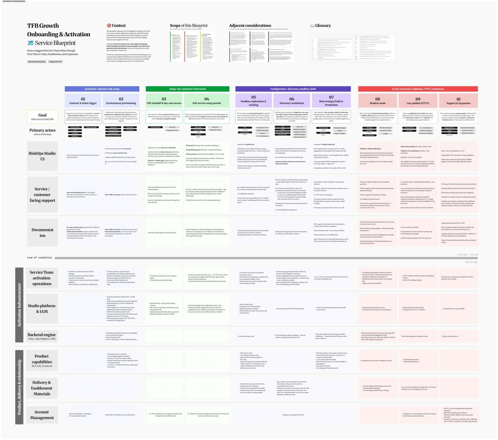
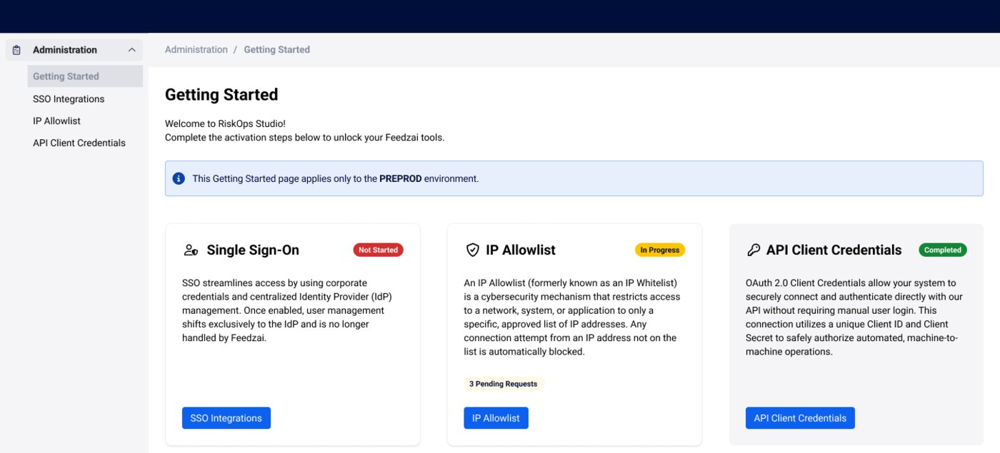
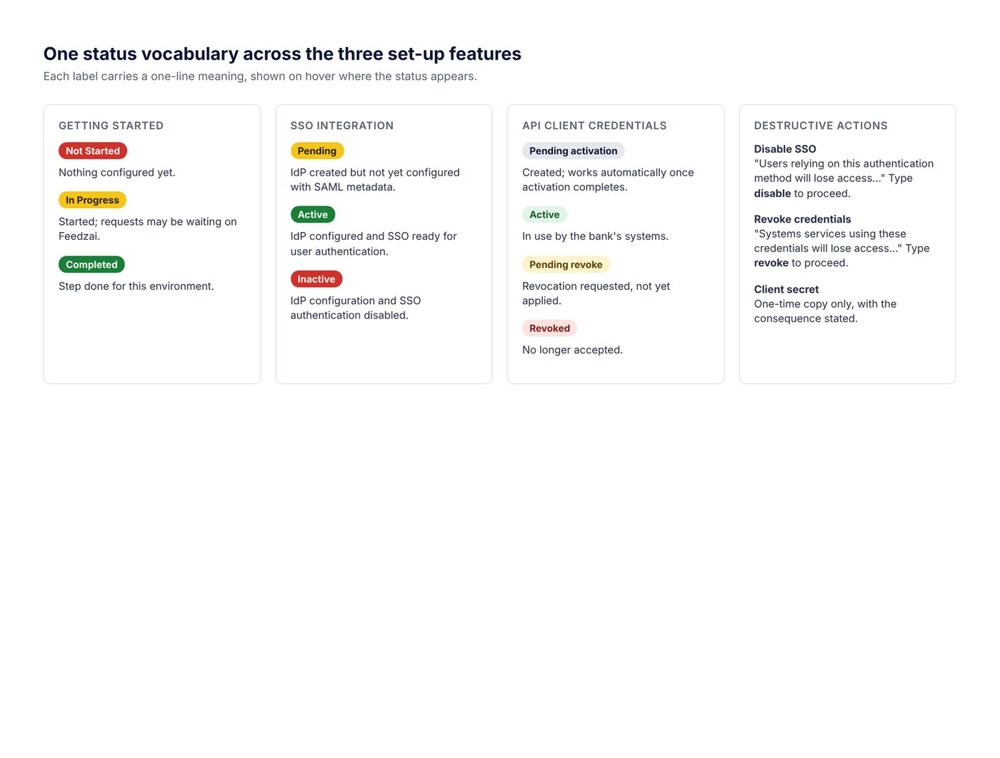

Feedzai: from signed contract to a working setup, without the calls.
A self-service onboarding and activation journey for Feedzai's Transaction Fraud for Banking. I was the lead product designer, working with researchers, product managers and engineering.
Role
Lead product designer for onboarding and activation, on contract
Team
User researchers, product managers and engineering in TFB Growth
Duration
February to July 2026
Outcome
90% shorter activation time. Seven onboarding sources became one service blueprint, and three set-up features became self-service.
From pending to active: the three set-up features turn green as the client completes each one.
01
Context
Feedzai builds fraud and anti-money-laundering software for banks. RiskOps Studio is its unified platform, gradually replacing the separate Fraud, AML and Identity applications.
In 2026 Feedzai was preparing TFB Growth, a new offering of Transaction Fraud for Banking that new clients would set up through self-service, due by the end of Q2. I joined on a contract as the main designer for onboarding and activation.
02
Problem
Onboarding and activation, the stretch between a signed contract and a client using the product, was known for its friction.
Setting up access and integrations meant emails, calls and hand-offs between teams. It could take days, or weeks when partners were involved, before a client saw any value. To know what to automate first, we needed to understand what really happened, and that knowledge was scattered.
Scattered knowledge. Onboarding was split across ten Feedzai teams and seven documents that didn't always agree.
Manual set-up. Customer success, project managers and the service team collected identity-provider details, IP lists and API key requests by hand.
A fixed date. TFB Growth had to launch by the end of Q2, so the scope had to be one the team could commit to.
03
My role and what I owned
I owned the design of the journey and of its first three features. Scope and priorities were decided with the product managers and engineering; my part was bringing the evidence and the options.
Synthesis for the service blueprint, with researchers and product managers.
Design lead for the three set-up features a new client meets: SSO, IP allowlist and API client credentials.
The Getting Started page that ties the three together.
Specs with engineering, written in Kiro, a spec-driven AI tool, from design-system components.
User researchers and product managers led the blueprint and its decisions. Engineering built the features from the specs.
04
Key decisions and trade-offs
Decision 1A service blueprint, not a journey map
Onboarding touches ten Feedzai teams and up to seven roles at the client. We treated the company's seven documents as research data: I used AI to pull steps, actors, systems and open questions out of each one, we checked every item with the team that owned it, and logged conflicts instead of picking a side.
Chosen
One blueprint of 10 stages in 4 phases, showing what the client does, the people and systems behind each step, and every hand-off.
Rejected
A journey map. It would have shown the client's experience and hidden the work behind it, which is where the days and weeks went.
Trade-off
A bigger artefact that takes longer to agree. In return, every team decided from the same picture.

The blueprint: from contract to support and expansion, with scope, open topics and a shared glossary.
Decision 2One page for the three things that block a start
The blueprint showed that getting started meant three set-up steps: before a new client could use the product it needed SSO, an IP allowlist and API client credentials in place.
Chosen
A Getting Started page with the three steps and the status of each, under the environment's name, so an admin knows what to do first without a call.
Trade-off
A page that matters less once set-up is done. Each environment needs its own set-up, and the wrong one is easy to configure, so naming it first was worth the space.

Getting Started: three steps, each with its status.
Decision 3Fix errors at upload, not in a ticket
Set-up errors were found late, by support: problems with SSO files only surfaced in tickets. So SSO shows the values the identity provider needs, then checks the SAML file as it is uploaded. Each claim is marked found or missing, and missing ones are generated to copy back.
Chosen
Validation in the product, at the moment of upload.
Trade-off
More logic in the product and less in support. For a self-service offering, that is the point.
Decision 4Three features on time, the wizard later
All three features share the same status labels, so learning one teaches the others. That consistency was cheap. A guided wizard across the three was not.
Chosen
Ship SSO, IP allowlist and API client credentials for Q2 with one status vocabulary.
Rejected for Q2
A guided set-up wizard. It was logged for Q3 so the team could commit to a date it could meet.
Trade-off
For now, admins find their own way through three pages, with customer success on hand.

One status vocabulary across the three features.
05
Outcome
90%
reduction in activation time.
7 → 1
onboarding sources reconciled into one service blueprint.
3
self-service set-up features: SSO, IP allowlist and API client credentials.
The blueprint also gave ten teams one picture of onboarding, with its conflicts logged and its open questions marked for a decision.
06
What I'd do next
Put the set-up flows in front of the clients' administrators as early as possible.
The people who configure SSO at a bank are rarely in the room when the contract is signed, and they use different words for the same things.
Test with client admins, not only with the internal teams who support them.
Build the guided wizard planned for Q3, using what the first self-service set-ups show.
Use the blueprint to pick the next manual step that self-service should replace.
Let's talk about your product.
I'm based in Porto and work remotely, hybrid or on site.